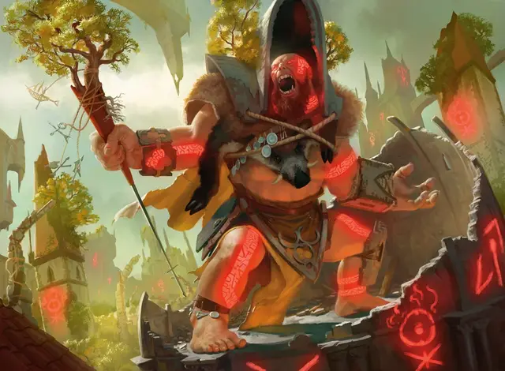

Шаман раскола
Sunder Shaman
Огромный Великан, хаотично-нейтральный

Класс Доспеха 20 (каменный доспех)
Хиты 138 (12к12 + 60)
Скорость 40 футов
| мод | спас | ||
|---|---|---|---|
| СИЛ | 23 | +6 | +6 |
| ЛОВ | 15 | +2 | +6 |
| ТЕЛ | 21 | +5 | +9 |
| мод | спас | ||
|---|---|---|---|
| ИНТ | 10 | +0 | +0 |
| МДР | 12 | +1 | +5 |
| ХАР | 9 | −1 | −1 |
Навыки Атлетика +10, Восприятие +5
Чувства тёмное зрение 60 футов, пассивное Восприятие 15
Языки Великаний
Опасность 10 (5900 опыта)
Бонус мастерства +4
Особенности
Безрассудный. В начале своего хода шаман может получить преимущество на рукопашные атаки оружием, которые он совершает в течение этого хода, но броски атаки против него также имеют преимущество до начала его следующего хода.
Осадное чудовище. Шаман наносит двойной урон объектам и строениям.
Каменный камуфляж. Шаман совершает с преимуществом проверки Ловкости (Скрытность), чтобы спрятаться в каменистой местности.
Действия
Мультиатака. Шаман совершает две атаки Ударом. Первая из этих атак дополнительно наносит 18 (4к8) урона, если шаман получил урон с момента своего последнего хода.
Удар. . Рукопашная атака оружием: +10 к попаданию, досягаемость 15 фт., одна цель. Попадание: 24 (4к8 + 6) дробящего урона.
Камень. . Дальнобойная атака оружием: +10 к попаданию, дистанция 60/240 фт., одна цель. Попадание: 28 (4к10 + 6) дробящего урона. Если цель — существо, она должна преуспеть в спасброске Силы Сл 18, иначе будет сбита с ног.
Описание
Шаманы раскола — разгневанные великаны, которые направляют свою ярость в яростные атаки, наносящие огромный урон как врагам, так и строениям.
Эти шаманы иногда возглавляют холмовых великанов и каменных великанов, которые также живут среди Кланов Груулов. Иногда к ним присоединяются циклопы, эттины, фоморы и огры. Как и остальные груулы, они ненавидят городскую застройку, вторгающуюся в дикую местность, где они когда-то жили, — не в последнюю очередь и потому, что им так трудно вписаться в маленькие постройки. Им доставляет удовольствие разрушать такие постройки, и в пылу своей ярости они топчут здания и людей ногами и стараются вызывать как можно больше хаоса. Они часто вооружаются кусками зданий и используют колонны или другие архитектурные элементы в качестве дубинок.
Великаны
Великаны используют свои огромные размеры и силу, чтобы продвигать дело не менее чем четырех гильдий. В Легионе Боросов и Синдикате Орзов они хитрые солдаты. Великаны Культа Ракдоса и Кланов Груулов не менее эффективны, но им не хватает дисциплины.